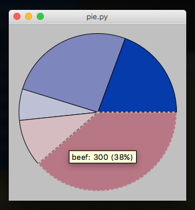

Beta Widgets
The following widgets are in beta.
They're available and in use, they're just not quite complete, and not fully tested...
ttk
If you want access to the Tk themed widget set then you'll need to tell appJar to use it:
from appJar import gui
app = gui("ttk Demo")
app.useTtk()
app.addButton("Press Me", None)
app.go()
At the moment, this simply imports ttk, so the standard widget set will be replaced with a ttk widget set.
MicroBit Emulator
Widget to emulate a MicroBit

from appJar import gui
app = gui()
app.addMicroBit("mb1")
app.setMicroBitImage("mb1", "09090:90909:90009:09090:00900")
app.go()
Add MicroBits
.addMicroBit(title)
Will create a 5x5 grid emulating the MicroBit LEDs.
Set MicroBits
-
.setMicroBitImage(title, image)
This sets each pixel to the specified brightness (0 to 9).
Each set of 5 digits represents a row of pixels, from top to bottom. -
.setMicroBitPixel(title, x, y, brightness)
Will set the brightness of the specified pixel.
x&yshould be between 0 & 4.
brightnessshould be a value between 0 & 9 to represent how bright to make the pixel. -
.clearMicroBit(title)
Will turn off all of the pixels - setting their brightness to 0.
GoogleMaps
A self-contained GoogleMaps widget.
It provides useful functionality for finding somewhere on Earth.
All requests for map data are performed in the background, so the UI shouldn't become unresponsive.

from appjar import gui
app = gui()
app.addGoogleMap("m1")
app.setGoogleMapSize("m1", "300x500")
app.go()
Add GoogleMaps
.addGoogleMap(title)
Creates a GoogleMap widget.
Displays a map image, and provides functionality to search, zoom, and change terrain, as well as a link to the original image.
Set GoogleMaps
-
.searchGoogleMap(title, location)
Update the named GoogleMap widget to show the specified locaiton. -
.zoomGoogleMap(title, mod)
Change the zoom level of the named GoogleMap.
Providing a + or - will cause the map to zoom in or out one level.
Otherwise, a digit between 0 and 22 should be provided, to set the zoom level. -
.setGoogleMapTerrain(title, terrain) -
.setGoogleMapSize(title, size)
Set the size of the GoogleMap. Should be in the format"300x300".
Note, if you set it too small, the control widgets won't look good... -
.setGoogleMapMarker(title, location)
Will drop a marker on the specified location.
The marker will only be visible if the currentlocation&zoom levelpermit.
If an emptylocationis provided, all markers will be removed.
Get GoogleMaps
-
.getGoogleMapLocation(title)
Returns the current displayed location.
Will return an empty String, if the user clicked the H button. -
.getGoogleMapZoom(title)
Returns the current zoom level of the map tile. -
.getGoogleMapTerrain(title)
Returns the current terrain setting for the map tile. -
.getGoogleMapSize(title)
Returns the current size of the map tile.
Save GoogleMaps
.saveGoogleMap(title, fileName)
Saves the currently displayed map to the named location.
By default, all map tiles are GIFs.
PieChart
Widget to depict a Pie Chart.
It will automatically calculate percentages, and draw a pie chart, given a dictionary of items and their amount.
The PieChart is purely for display purposes, and is not interactive, other than a simple mouse-over effect with a tooltip.

from appJar import gui
app = gui()
app.addPieChart("p1", {"apples":50, "oranges":200, "grapes":75,
"beef":300, "turkey":150})
app.go()
Add PieCharts
.addPieChart(title, values)
Takes a dictionary of names and values, which will be converted to percentages, and plotted on the chart.
The names will be used as part of tooltips that appear over each wedge of the PieChart.
Set PieCharts
.setPieChart(title, name, value)
Will update the PieChart, by either changing an existing value, adding a new value, or removing a value if it's set to 0.
Tree
Takes an arbitrary XML string, and converts it into a tree structure.

from appJar import gui
app = gui()
app.addTree("t1",
"""<people>
<person><name>Fred</name><age>45</age><gender>Male</gender></person>
<person><name>Tina</name><age>37</age><gender>Female</gender></person>
<person><name>CLive</name><age>28</age><gender>Male</gender></person>
<person><name>Betty</name><age>51</age><gender>Female</gender></person>
</people>""")
app.go()
Add Trees
.addTree(title, xml_data)
Create a tree from the specified XML data
Set Trees
.setTreeDoubleClickFunction(title, func)
Register a function to call when an item is double-clicked.setTreeEditFunction(title, func)
Register a function to call when an item is edited.setTreeEditable(title, value)
Set whether the tree can be edited.setTreeColours(title, fg, bg, fgH, bgH)
Set the fg/bg/fg highlight/bg highlight colours of the tree.setTreeBg(title, colour)
Set the background colour of the tree.setTreeFg(title, colour)
Set the foreground colour of the tree.setTreeHighlightBg(title, colour)
Set the background colour of the highlighted node.setTreeHighlightFg(title, colour)
Set the foreground colour of the highlighted node
Get Trees
.getTreeXML(title)
Return the tree as XML.getTreeSelected(title)
Return the selected node as a String.getTreeSelectedXML(title)
Return the selected node (and any children) as XML
Grid
Used to create a spreadsheet like interface.
The grid has mouse interactivity, with mouse-over highlighting, and mouse-click highlighting.
It is possible to include buttons at the end of each row, and an additional row of entry boxes, with their own button.

from appJar import gui
app = gui()
app.setFont(20)
app.addGrid("g1",
[["Name", "Age", "Gender"],
["Fred", 45, "Male"],
["Tina", 37, "Female"],
["Clive", 28, "Male"],
["Betty", 51, "Female"]])
app.go()
Add Grids
-
.addGrid(title, data, action=None, addRow=None)
Receives a (jagged) 2D list of values. The first list should be the headers for the grid, the rest will contain each row of values.If
actionis set, a button will be created, at the end of each row, calling the specified function. It will pass a list of values, representing the selected row.
If
addRowis set, then an additional row will appear at the end of the grid, with entry boxes and a button to call the specified function.
If both parameters are set to a function, then both buttons at the end of each rowm and a row of Entry boxes will be shown:

Get Grids
-
.getGridEntries(title)
IfaddRowwas set when the Grid was created, this function will get the contents of the entry boxes.
They will be returned as a list, in the same order as the entry boxes. -
.getGridSelectedCells(title)
Gets a dictionary of booleans, indicating the status of each cell.
True indicates the cell is selected, False indicates the cell is not selected.
The name of each entry on the dictionary will be in the format ROW-COLUMN, eg. 0-2
Set Grids
.addGridRow(title, data)
Adds a new row of data to the end of the existing grid.
It will be positioned at the bottom of the grid, above the entry boxes if present.
To have the Press button on the entries row add a new row of data, try the following:
def press(btn):
if btn == "Press": # the button on the entries row
data = app.getGridEntries("g1")
app.addGridRow("g1", data)
MatPlotLib
Support for embedding very basic MatPlotLib plots.

from numpy import sin, pi, arange
from appJar import gui
x = arange(0.0, 3.0, 0.01)
y = sin(2*pi*x)
app = gui()
axes = app.addPlot("p1", x, y)
axes.legend(['key data'])
app.go()
-
.addPlot(title, x, y)
Create a plot with the specified x and y values.
Returns the plot object, to allow further customisation. -
.updatePlot(title, x, y)
Update the specified plot with the specified x and y values. -
.refreshPlot(title)
Redraw the plot, call after changing the axes object...